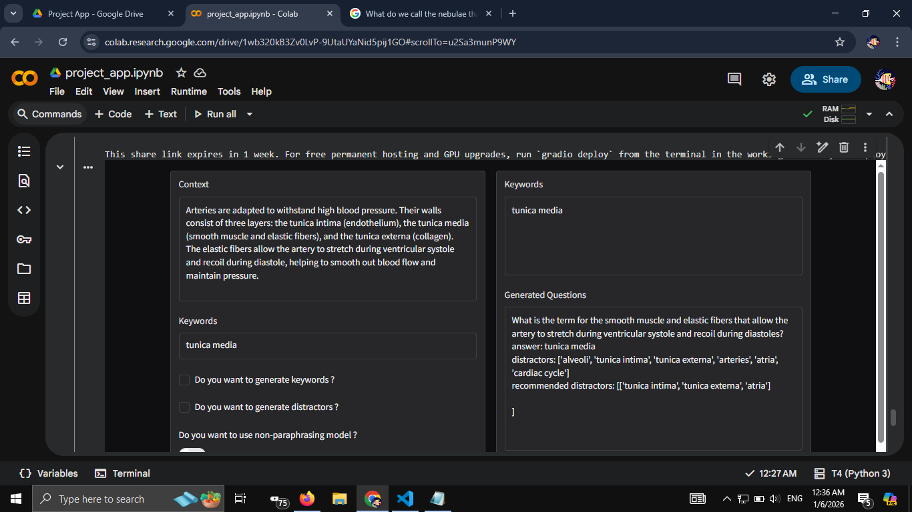
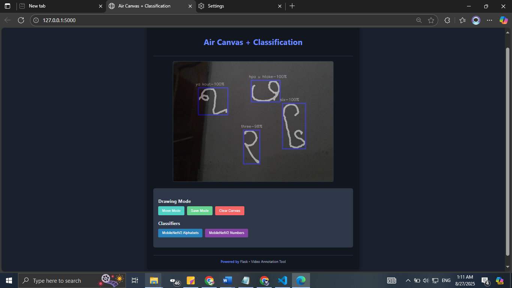

Banyar Oo
NLP Researcher · Web Developer
Education
Experience
METATEAM MYANMAR CO.,LTD.
Web Development Intern
[May 2026 - July 2026]
SOI ASIA EBA-KRI Kanchanaburi Fieldwork 2026
Chulalongkorn University & Mahidol University (Kanchanaburi Campus)
Participant Researcher
[11 - 17 June 2026]
UCSY NLP Lab
Research Intern
[Nov 2025 - Sep 2026]
UCSY NLP Lab
Backend Developer
[Oct 2024 - Sep 2026]
Publications
B. Oo, H. M. Mo, and H. M. S. Naing, "A Study on Multilingual Burmese Translation with a Fine Tuned NLLB Model," 23rd IEEE International Conference on Computer Applications (IEEE-ICCA), Yangon, Myanmar, Feb. 26, 2026. [Publication Pending]
Projects

MCQ Generation using T5 & Distractor Generation using Retrieval-Augmented Generation
A multiple-choice question generation system using a T5 Transformer model combined with retrieval-augmented generation for distractor generation. Fine-tuned with SciQ corpus and a custom domain-specific corpus created from a Cambridge Biology textbook and constructed a vector-based retrieval pipeline to generate semantically relevant distractors.

Burmese Alphabet and Numeral OCR
An OCR system that recognizes air-written Burmese alphabets and numerals using webcam-based finger tracking and machine learning. Built a real-time model predicting Burmese symbols from gestures.
Student Information System (SIS)
A server-side rendered web application built with Flask. It provides functionalities like assigning students and teachers to class sections, calculating marks, managing courses, and generating academic records.